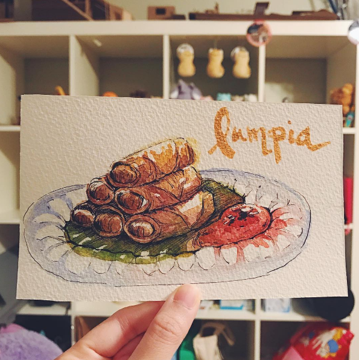
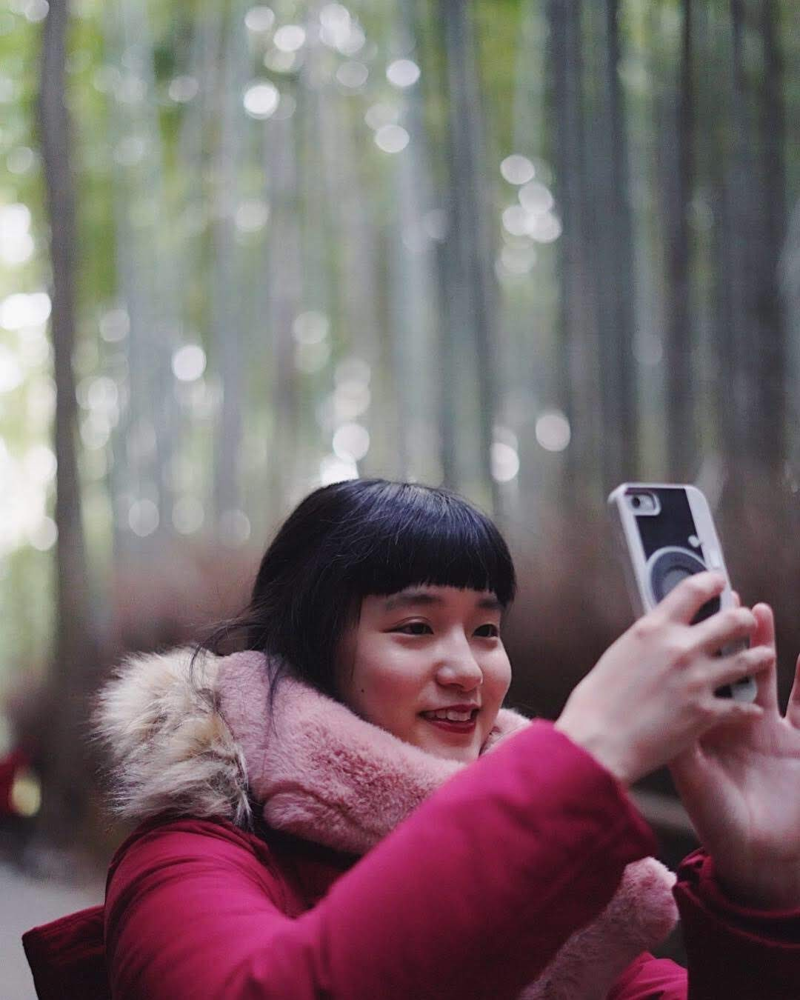
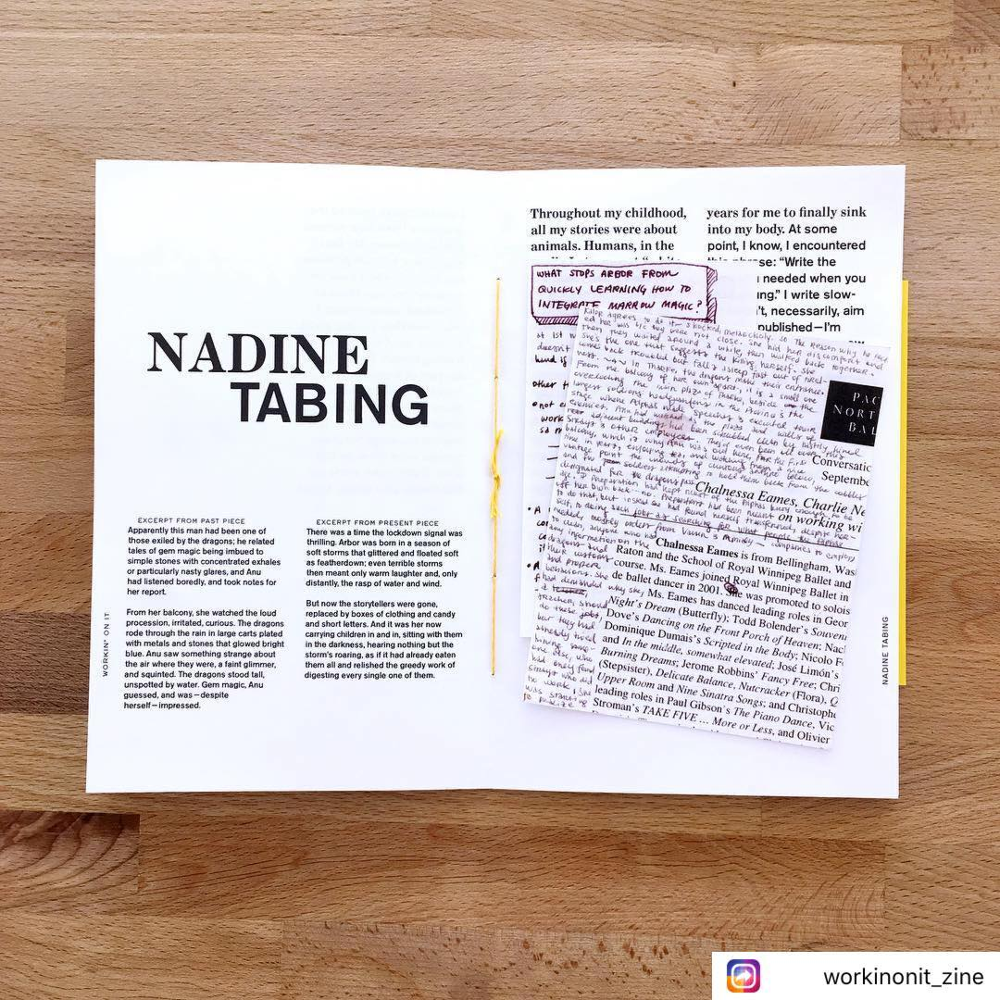

I draw!
I designed the 2020 “Year of the Rat” mascot for the Wing Luke Museum of the Asian Pacific American Experience. I also design stickers.

The Year of the Rat mascot, and Filipino dessert stickers
For a couple years I've been unreasonably into Hobonichi Techo Planners. I used to have three of them. (Three planners.) I have since learned from my past tragedies and have accepted that two planners is about my limit. (Two.)
I also like watercolor!
I also take photos!
I shoot with a Sony Alpha a7III. My current favorite lens is the Voigtlander 40mm f/1.2.

I take a lot of photos of my dog!
I also write!
I also write. A couple of my works have been published at UW's Speculative Arts & Lit Journal, but my current work is currently in-progress.
An image of some of my writing in the Workin On It Zine